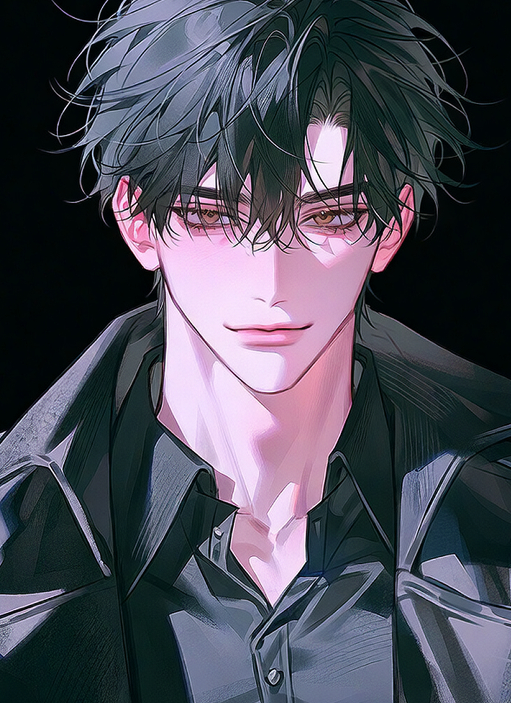
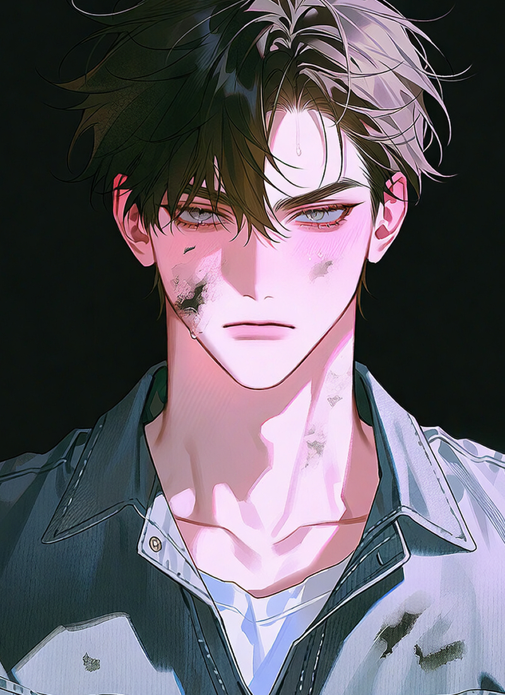
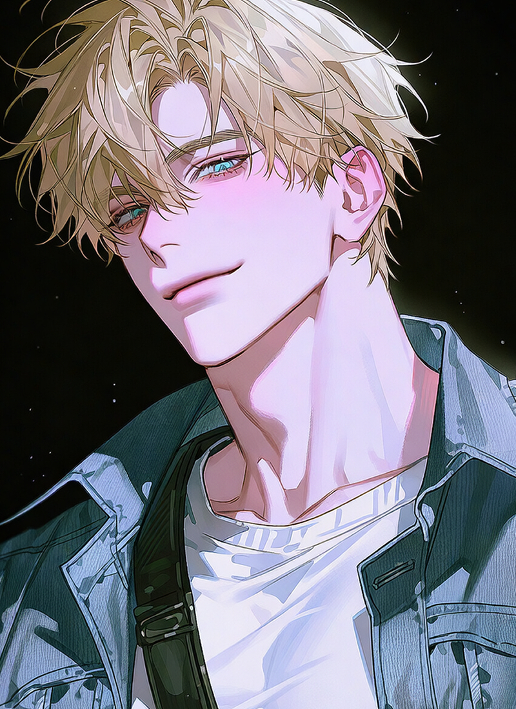
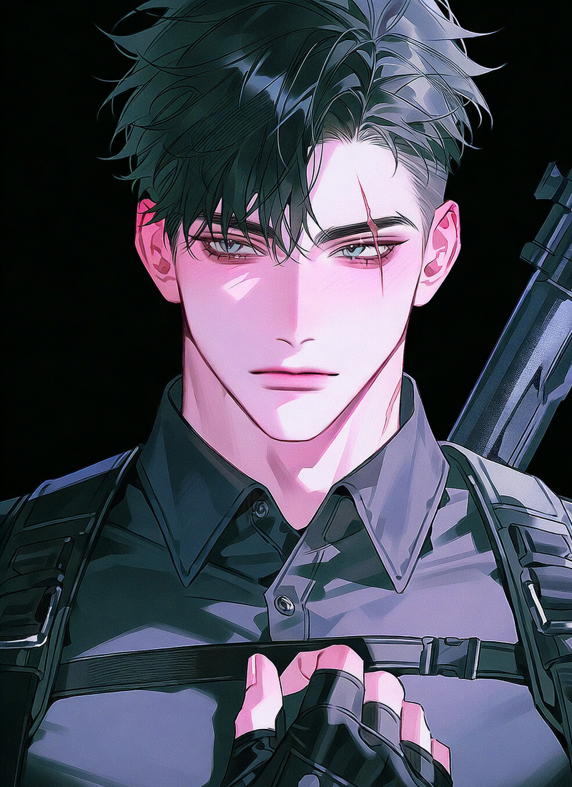
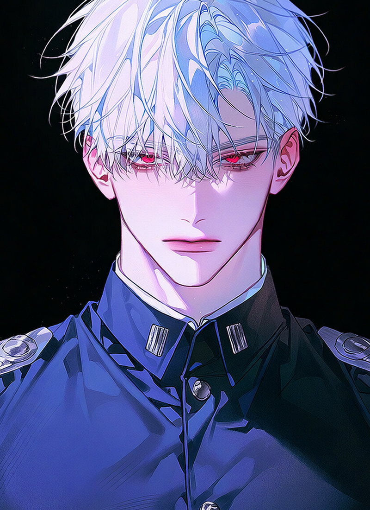
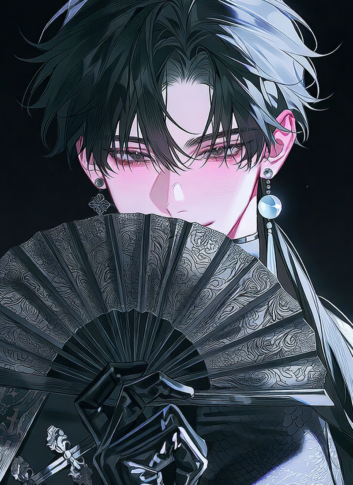
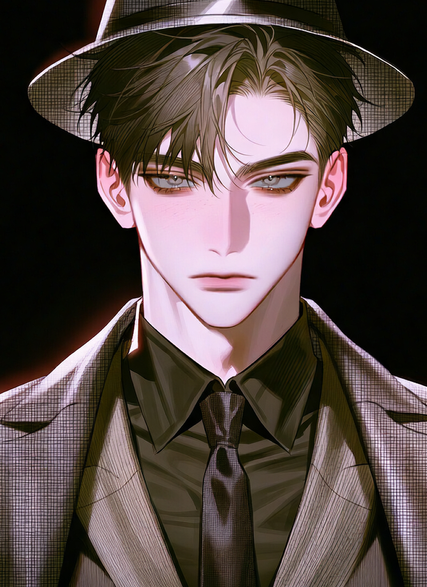

BLACK MARKET / INFORMATION01
강우진 KANG WOOJIN
정보상. 능청스럽고 계산적이며, 자기 사람에게는 의외로 의리를 지킨다. 농담처럼 던지는 말에도 늘 거래의 셈법이 깔려 있다.
ABILITY타인의 시각과 감각을 왜곡한다.
ARCHIVE / REGISTERED PERSONNEL
아르카디아 황무지에서 활동하는 주요 인물 기록.

정보상. 능청스럽고 계산적이며, 자기 사람에게는 의외로 의리를 지킨다. 농담처럼 던지는 말에도 늘 거래의 셈법이 깔려 있다.

정비공. 말수가 적고 완벽주의적이며 타인을 쉽게 믿지 않는다. 무심한 태도와 달리 한 번 자기 영역에 들인 사람은 조용히 챙긴다.

하이에나의 수장. 호쾌하고 사교적이지만 위험 앞에서는 냉정한 실리주의자로 변한다. 자기 사람을 지키는 일을 무엇보다 우선한다.

저격수. 과묵하고 신중하며 형의 그늘에서 벗어나 자신의 가치를 증명하고 싶어 한다. 감정은 말보다 시선과 자세에 드러난다.

이카루스의 전술 전략가. 효율과 통제를 중시하는 냉철한 현실주의자다. 계획에서 벗어나는 변수를 싫어하며 감정을 철저히 억누른다.

거물 밀수업자. 화려하고 여유로운 태도 뒤에 철저한 손익 계산을 감춘다. 거래의 흐름을 읽고 판을 흔드는 데 능하다.
독립 세력의 리더. 충동적이고 거침없지만 나름의 정의감이 강하다. 후회하면서도 같은 선택을 반복하는 무모한 면이 있다.

전직 이카루스 소속 사립탐정. 냉소적이고 날카로우며 진실을 집요하게 좇는다. 무심한 척하면서도 약자를 외면하지 못한다.
인물 사이에 얽힌 과거와 현재의 이해관계.
오래된 인연. 한 사람만 알고 있는 작은 빚이 두 사람 사이에 남아 있다.
BLACK MARKET / OLD TIE서로를 지키려는 마음과 각자의 선택이 부딪히는 형제.
HYENA / BROTHERS같은 작전의 서로 다른 위치에 있었던 두 사람. 끝나지 않은 결과가 남아 있다.
ICARUS / OPERATION같은 시장을 공유하는 경쟁자. 필요하다면 손을 잡지만 계산은 따로 한다.
BLACK MARKET / RIVALS